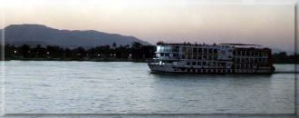

Az egyiptomi utazás egyik, sokak számára korábban elérhetetlen különlegessége mára népszerű turista programmá vált: a nílusi hajóutak. Az utazás egyszerre élmény a testnek és a léleknek, amely az ősi világ kultúrájának megismerésére vágyik. Ötcsillagos hajók indulnak Luxorból, és járják be az egyiptomi kultúra fő verőerét, elviszik az utazót legszebb kincseihez. A Nílus évenkénti áradása teremtette meg a fáraók országának gazdagságát, és az ősi Egyiptomban ezért különös tisztelettel adóztak a folyónak. Mintegy köszönetként mellé építették legfontosabb templomaikat. A hajók, miközben felfelé haladnak a Níluson, nemcsak Egyiptom kies tájait szelik át, hanem kultúrájának bölcsőjét is. A hajó megáll mindazoknál az építészeti emlékeknél, amelyek az országot azzá tették, ami: csodálatra méltó látnivalók kifogyhatatlan tárházává. Az utazás átöleli Egyiptom összes fontosabb emlékét. Az út elején mód nyílik Kairó és Gíza piramisainak megtekintésére, majd útba ejtik a Királyok völgyét, Hatsepszut királynő templomát, a Memnón-kolosszusokat, Edfu és Kom Ombo templomait, Asszuánt és az Elefánt-szigetet is. Egy hét felejthetetlen barangolás ez egy máig ismeretlen világ relikviái között.
Egyiptomi utazásunk egyik legszebb látnivalója a Karnaki templom-együttes. Luxorból a legtöbben busszal vagy konflissal mennek Karnakba, de aki ráér, annak – a látvány miatt – megéri a gyalogos séta is. Három kilométer a távolság, és aki nem a Nílus parti sétányon megy, hanem keresztül-kasul a külvárosi utcákon, az találkozni fog a valódi Egyiptom arcával. Sok gyerek, meglepő szegénység, mindenfelé állatok – bizony ez is az utazás nagy élményei közé tartozik. De amint feltűnik Karnak, mindent elfelejt a látogató. Itthon már mindenki látott róla képeket, olvasgatta az útikönyvet, próbálta elképzelni, milyen is lehet. De ez az a hely, ahol az előképzésnek nem sok hasznát vesszük. Hatalmas területen fekszik, és olyan sok épület maradványát láthatjuk, hogy nehéz térképszerűen magunk előtt látni. Szerencsére a látvány magával ragad bennünket, így az útikönyv böngészése is általában elmarad. Tudni kell, hogy az épületek sokasága nem egyszerre, hanem mintegy kétezer éven át épült, így dinasztiánként változott a kép, és gyakran az elődök által emelt remekművek anyagát használták fel az újabb építők.